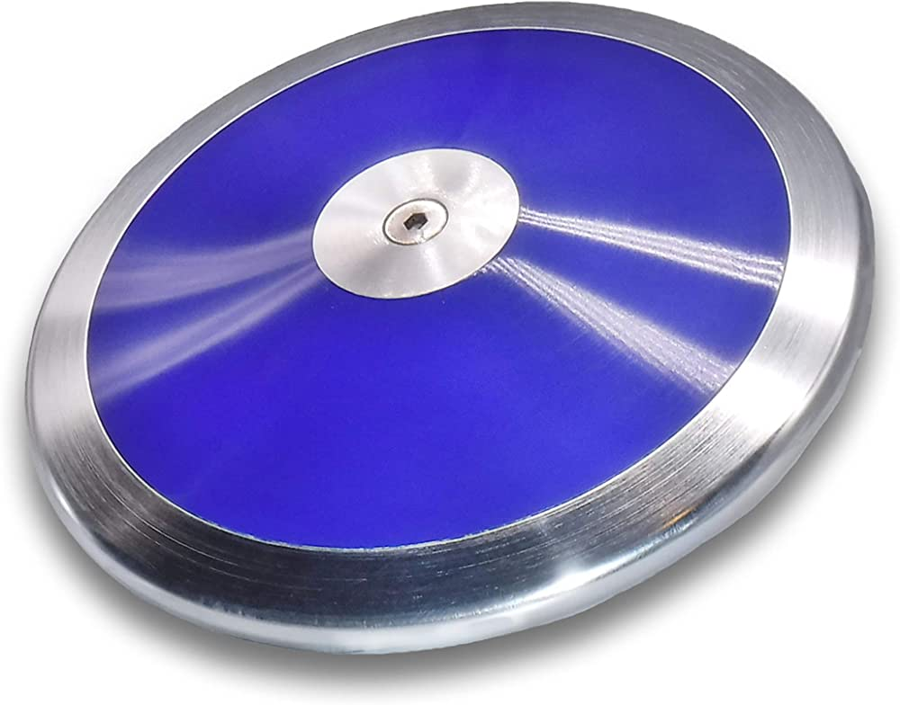
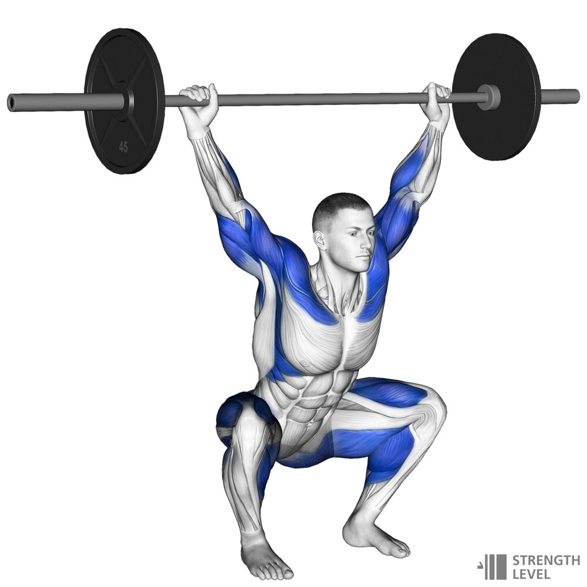
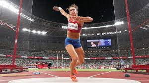

Gallery
Discus is regarded by many as the most beautiful event in Track and Field, and I couldn't agree more. The spinning form of a disucs thrower is like no other, and instead of a sport, it almost appears that the athlete is creating art inside a 2 meter circle.
This is Kristjan Ceh, a diamond league pro discus thrower. Each time he steps inside the circle, magic happens.

This is what a discus looks like. It's thick in the center and tapers down. create a aero-dynamic shape that rests nicely in your hand.

This is a snatch, one of the most explosive movements in the field of strength training. This is one example of the many exercises that discus throwers do to increase their agility, explosivity, and raw power.

This is Vallerie Allman, the current American women's discus record holder. Her previous career of Ballet helped her much in the formulation of her discus form
This is Sandra Perkovic, one of the best if not the best female discus throwers. She makes her discus fly through the air with ease, making such a hard sport look smooth like butter.